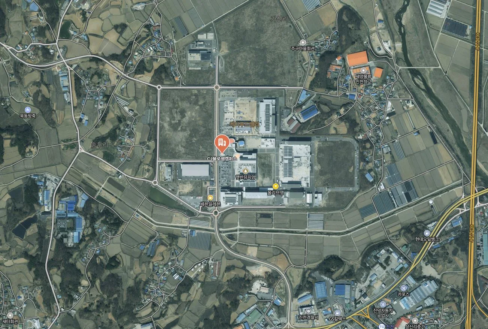
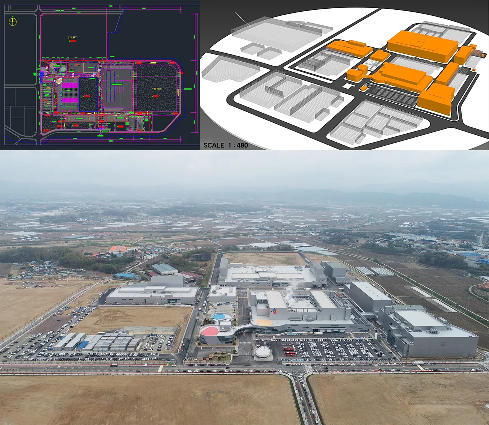
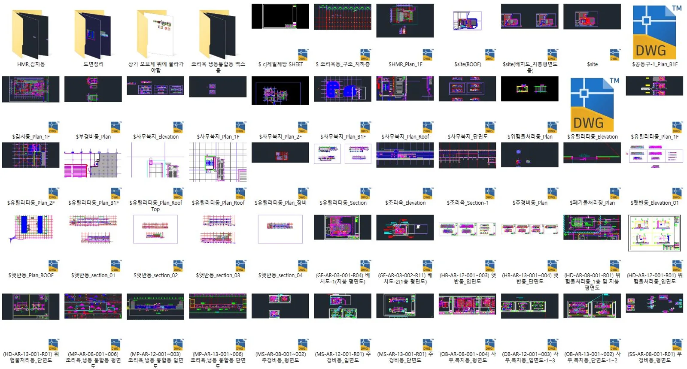
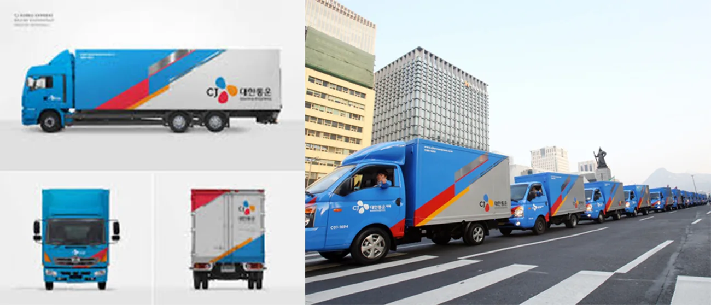
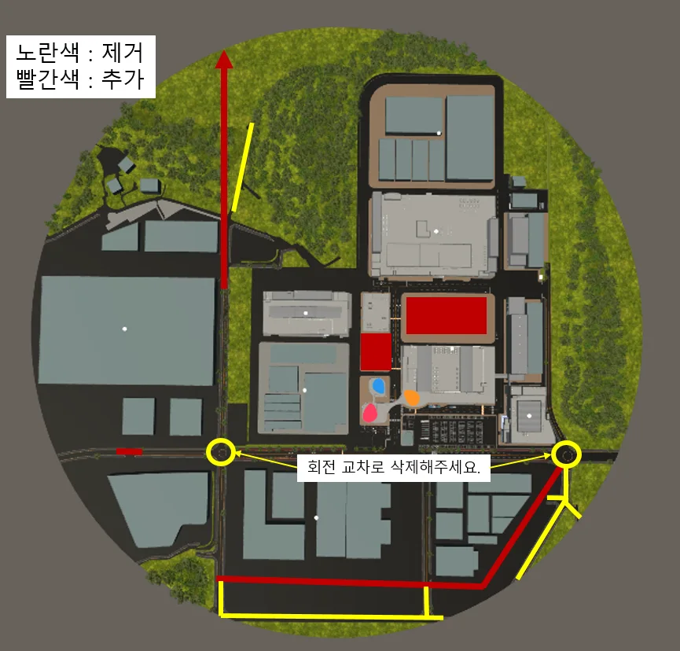
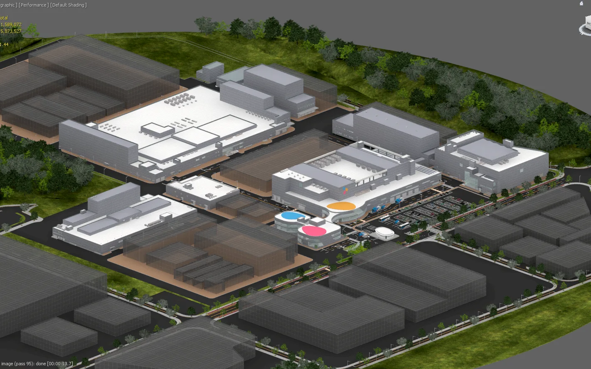
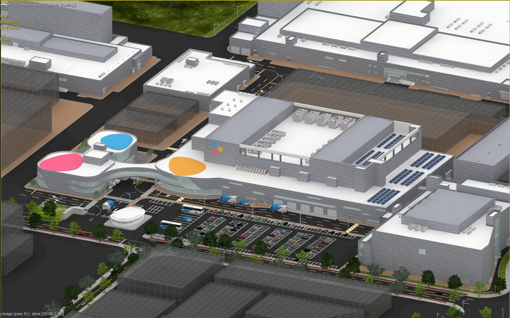
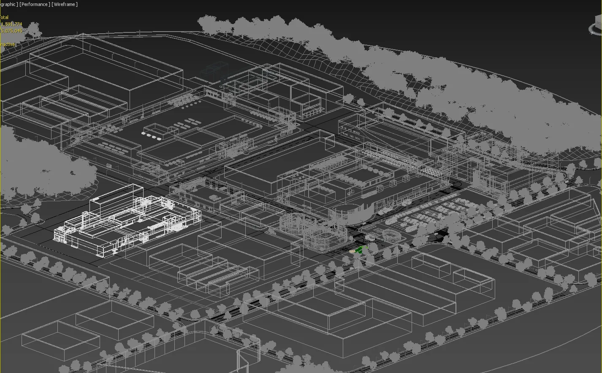
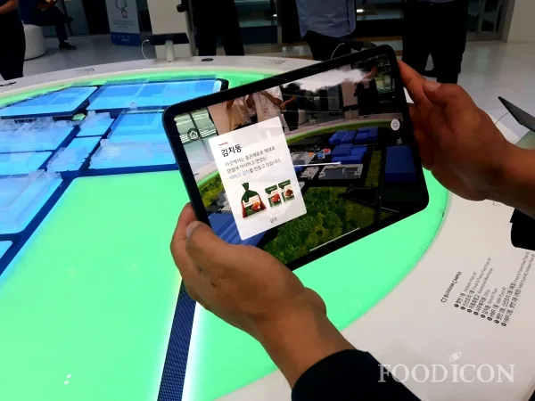
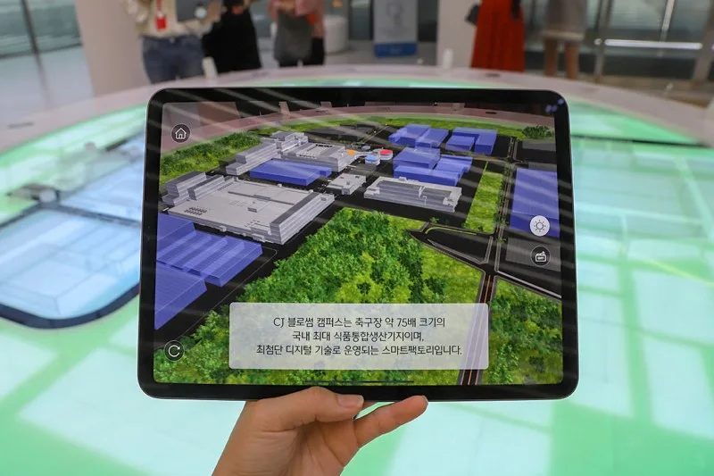

프로젝트 소개
충북 송두 산단에 위치한 CJ 블로썸 캠퍼스를 소개하는 VR/AR 모델링을 제작하는 업무를 위탁받아 납품 하였습니다.
사업대상지: 충북 진천군 진천읍 씨제이로 110 https://naver.me/xuc1O7iU

프로젝트 개요
본 프로젝트는 공장 홍보 및 체험 공간 및 서비스 제공 을 목표로 수행되었으며, 이후 다양한 환경에서도 적용될 수 있도록 기기 호환성 및 성능 최적화 에 중점을 두었습니다.
제작 과정 및 주요 요소
도면 및 드론 데이터 기반 구축 클라이언트가 제공한 정밀 도면 과 드론 항공 사진 을 바탕으로, 실제와 거의 동일한 정밀도로 3D 모델을 제작하였습니다.
스케일 검증 및 현실감 있는 모델 구현 공장 스케일에 맞춰 모든 구조물, 건축 요소를 정교하게 구현했으며, CJ대한통운 물류 차량 의 실제 랩핑 디자인도 모델에 적용해 현장감이 극대화되었습니다.
계절감이 반영된 AR 연출 AR 콘텐츠에서는 가을, 겨울의 나무맵 텍스처 도 제작하여 다양한 시각적 경험을 제공할 수 있도록 구성했습니다.
기기별 호환성 및 쉐이딩 최적화 다양한 VR/AR 기기에서 원활히 구동되도록 MESH 구성 및 쉐이딩 작업 을 최적화하여 안정적인 성능을 확보했습니다.
프로젝트 진행과정


공장을 모델링하기 위한 도면 일체와 최종적으로 제작되어야 할 파일의 스케일을 확인 후 작업 진행하였습니다.

모델링 내에 배치될 차량에 실제 대한통운 차량의 랩핑이 들어간 맵이 씌워지길 요청해주셔서 그대로 반영하여 제작하였습니다.

이후 디테일한 부분들을 수정사항 요청사항을 정리 반영하여 최종 단계까지 진행하였습니다.
AR에서 계절감을 표현하기 위해 가을, 겨울 나무 맵들도 제작하여 최종 납품하였습니다.






AR VR 모델링은 현실적으로 제작됨과 동시에 실제 구현하는 기기와 호환성 및 최적화에도 신경써야합니다.
이런 고객에게 추천합니다
신설 공장/산단 등을 투자자, 임원, 내외빈 에게 가시성 있게 소개하고 싶은 기업
디지털 트윈 기반 관리 시스템 을 구축하려는 스마트팩토리 추진 기업
전시/설명용 VR 콘텐츠 를 활용해 기업 이미지를 강화하고자 하는 기관
대규모 부동산, 건축설계사무소 및 공간 기획자
왜 메이크 그룹인가?
10년 이상 의 실무 기반 모델링 및 렌더링 노하우
산업군 특화 맞춤 제작 (식품, 물류, 제조 등)
VR/AR 환경에 최적화된 경량화 및 기기 호환 기술 보유
정확한 모델링 및 사후관리 데이터 보관 수정 서비스 제공 (10년간)
메이크그룹은 단순한 3D 모델링을 넘어, 실제 공간 경험을 가상에 그대로 재현 하는 데 집중합니다.
VR/AR 기반 홍보/시뮬레이션 모델이 필요하신가요?
지금 바로 상담 요청 주세요.
이상 메이크 그룹이였습니다. 감사합니다.
홈페이지
https://www.makegroup.co.kr/
블로그
https://blog.naver.com/makegroupcg